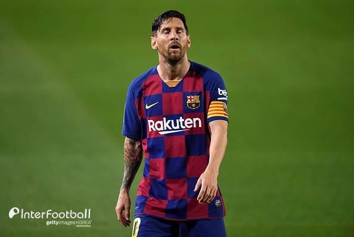

- 해외축구
- 해외야구
- 국내야구
스페인 현지 언론들은 26일(이하 한국시간) 일제히 메시가 바르셀로나에 이적요청을 했다고 전했다. 또한 메시는 자유계약으로 팀을 떠날 수 있는 조항이 있는 것으로 알려졌다. 바르셀로나와 메시는 2021년까지 계약이 맺어져 있다. 하지만 메시가 2017년에 재계약 당시 2019-20시즌이 끝난 뒤 자유계약으로 팀을 떠날 수 있는 조항을 추가했다고 보도되고 있는 상황이다.이에 가스파르트 전 바르셀로나 회장은 26일 스페인 '마르카'와의 인터뷰에서 "메시는 떠날 수 없다. 그는 2021년에 이적할 수 있다. 나는 그 계약서를 봤고 이건 명백하다. 자유이적으로 떠날 수 있다는 조항은 6월에 만료됐다. 이건 되돌릴 수 없다. 여기서부터는 선수가 아니라 구단이 담당한다. 돈의 문제가 아니다. 이건 합의한 계약서이기 때문"이라며 현 상황을 정리했다.조항의 발효 여부를 떠나서 가스파르트 전 회장은 메시가 잔류하길 희망했다. 그는 "메시가 바르셀로나를 떠나려고 하는 이유를 이해할 수 없다. 우리 모두는 그가 바르셀로나에 머물기를 원한다. 그에게 잔류를 요구하는 수백만 명의 팬들은 가치가 없는 것일까? 메시는 많은 사랑을 받고 있으며 1년 더 이곳에서 즐겁게 지냈으면 좋겠다"며 메시의 잔류를 외쳤다.
